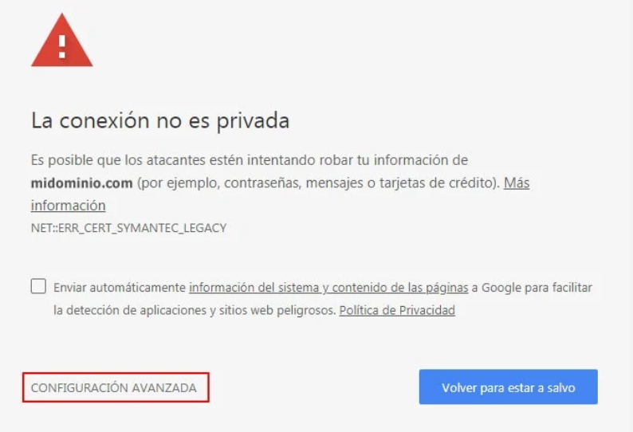
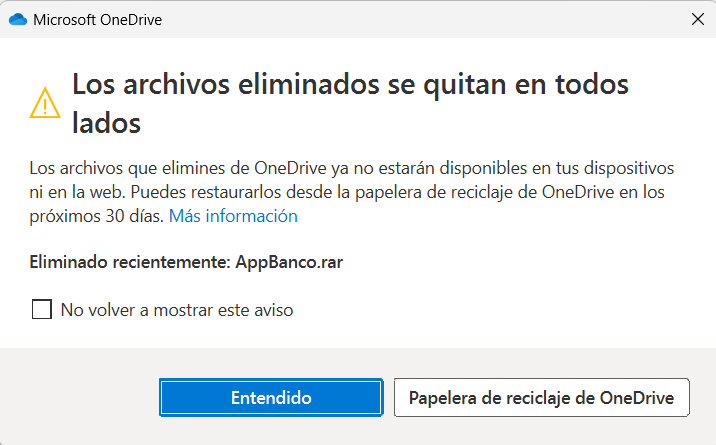
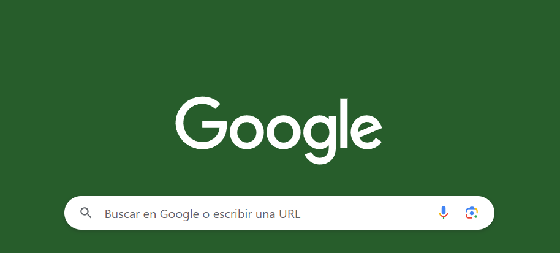
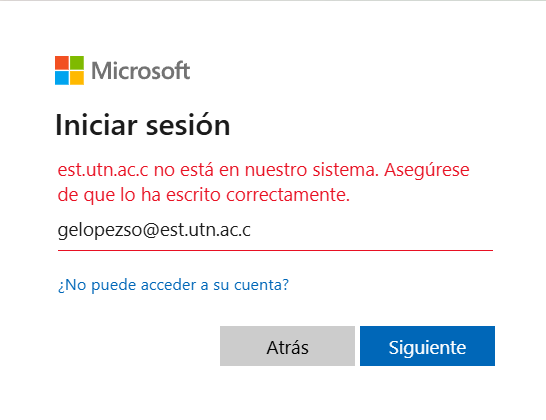
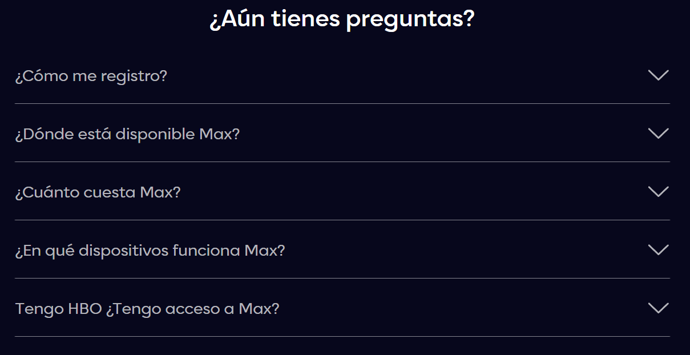

Según Coppola (2023), la usabilidad web se refiere a las características que posee un sitio web,
las cuales crean una experiencia de navegación satisfactoria para el usuario.
Estas características abarcan campos como el diseño gráfico de la página, colores,
y la presentación de la información dentro del sitio web.
Este proceso empieza desde que el usuario entra al sitio y toma en consideración la velocidad de carga;
la logística del menú y sus secciones; el diseño y la organización de los elementos gráficos;
que las páginas no muestren errores; la optimización de los textos, funcionamiento de los chats,
los formularios, la barra de navegación, botones y demás elementos. (Coppola, 2023, párr. 4)
Importancia y ventajas
Para un usuario frustrado, es más fácil abandonar tu sitio web e intentar satisfacer sus necesidades con el de la competencia.
La usabilidad web trae consigo diversas ventajas que pueden ser de gran utilidad para nuestros sitios web,
y así alcanzar nuestros objetivos.
Omatech(2022) cree que la importancia de la usabilidad web radica principalmente en los siguientes puntos:
VENTAJAS
Se reduce el porcentaje de abandono,
si un sitio web cuenta con las características
esenciales para considerar que tiene una buena usabilidad web,
corre menos riesgo de los usuarios abandonen el sitio.
Aumenta la posibilidad de obtener nuevos clientes,
un potencial cliente, suele tener una primera impresión de
tu empresa al visitar su sitio web.
Enriquece la imagen y prestigio de la empresa,
una buena usabilidad web puede posocionar una empresa como una de las más
populares de los usuarios que la visiten al proporcionarle una
experiencia de navegación de calidad.
Este principio de Jakop Nielsen,
lo que busca es hacer énfasis en la importancia de mantener a
los usuarios informados en todo momento sobre el estado actual del sistema,
para así conocer el resultado de sus acciones anteriores, y las decisiones que debe de
tomar a continuación.
Es decir, que cada acción que ejecute el usuario deberá estar acompañado con información
visual que respalde la respuesta del sistema ante estas acciones,
y de esta manera reducir la incertidumbre de los usuarios.
Un ejemplo de este principio aplicado, son las barras de carga del sistema como la siguiente:
Las barras de carga nos dan información visual sobre el progreso de una acción del sistema
Como desarrolladores web, nunca se debe asumir que nuestros propios conocimientos
e interpretación de objetos o palabras es la misma que la de los usuarios, ya que
la forma en la que interpretamos las cosas depende de un gran número de factores que
varía en cada persona (García, 2022)
Kaley(2018) resalta que si los usuarios no entienden los términos utilizados
en un sitio, se verán obligados a salir del sistema y buscar el significado
en otro lugar, y en el peor de los casos, buscar el mismo servicio en la competencia.
Este principio, lo que nos indica es que los sistemas deben estar orientados a
que los conceptos y objetos estén en un lenguaje familiarizado con el usuario,
en lugar de términos de lenguaje interno.
Un ejemplo de esta regla se ve reflejado en el sitio web de Monge, que utiliza elementos visuales
como lo es un carrito de compras, el cual da a entender que al tocar ese ícono puede comprar artículos
, esto hace que los usuarios se sientan familiarizados con el,
ya que simula la experiencia de ir a la tienda física.
El ícono de carrito de compras simula la experiencia de
comprar en una tienda física y elegir productos
Es muy común para los usuarios cometer errores,
por lo que es fundamental que después de cada acción,
tener la posibilidad de cancelar o volver atrás. El hecho de que el usuario
tenga la posibilidad de revertir sus pasos le da un sentimiento de confianza en el sistema, y se
fomenta una sensación de libertad.
La acción de cancelar evita que los usuarios se frustren y
se vean en la necesidad de realizar pasos innecesarios para volver al sitio deseado,
y es el principio de la tercera regla según García (2022).
Un ejemplo de sitio web que implementa esta tercera regla, es Gmail. Luego de archivar un correo, este
sistema nos brinda automáticamente la opción de deshacerlo.
La opción de deshacer la opción luego de archivar un correo llega a ser muy útil en caso de que
la acción realizada haya sido accidental
Los usuarios ya tienen un mapa mental definido de lo que esperan ver dependiendo
del sitio web que van a visitar. De lo que habla la cuarta ley de Nielsen,
es que los usuarios no deberían de aprender cosas nuevas cada vez que se ingrese a un nuevo sitio web,
si no, que los sitios web deberían tener convenciones bien establecidas que facilitan la vida de los usuarios,
y no tratar de innovar de manera abismal, si no apegarse a las convenciones típicas de los sitios web.
Un ejemplo de estas convenciones es el logo de la lupa que simboliza la navegación,
el cual está presente en la mayoría de los sitios web que están orientados a las compras en línea.
La barra de busqueda del sitio web de Monge que implementa la cuarta ley de Nielsen
Los mensajes de error son importantes, pero antes de eso los sistemas
deberían de ser capaces de evitar que esos errores ocurran en primer lugar.
Esto tiene mayor menor grado de importancia dependiendo de la acción que estemos ejecutando.
El mensaje principal de este principio es eliminar las condiciones que son propensas a
dar problemas en primer lugar, y presentar a los usuarios ventanas de confirmación
antes de cualquier acción. Por ejemplo, cuando queremos ingresar a un sitio que no es
seguro y el navegador nos lo hace saber antes de ingresar

Mensaje de error antes de ingresar a un sitio web no seguro
Para un usuario, es más fácil reconocer que aprender y recordar.
Se dice que entre menos se haga pensar al usuario,
más satisfactoria será su experiencia de navegación.
Un usuario no debería de retener información de un sitio web a otro.
De lo que habla la sexta regla, es que un sistema debe de ser lo más intuitivo posible,
para así evitar que el usuario piense de más al querer realizar una acción
Las portadas al lado del nombre de las canciones pueden ayudarnos a recordar cuales son nuestras favoritas
Nunca se sabe que tipo de usuario se verá atraído por tu sitio web,
por lo que no podemos asumir que será un novato en la navegación web
ni que tampoco será un usuario experto, por lo que el sistema deberá adaptarse a
ellos y a las circunstancias y brindarles diferentes formas de cumplir sus objetivos
dentro del sitio web, ese es el objetivo de la sétima regla
Un ejemplo de este principio son las ventanas emergentes, las cuáles tienen distintas maneras de
cerrarse, ya sea tocando fuera de la ventana, usando las tecla "ESC", o simplemente tocando el boton "Entendido",
o en la equis que generalmente se encuenra en la parte superior.

Las ventanas emergentes generalmente siempre tienen diferentes formas de ser cerradas
Las interfaces no deberían tener información que sea irrelevante o
muy poco necesaria para la funcionalidad de la interfaz, ya que esta información
innecesaria compite visualmente con la información que si es indispensable.
Este principio no busca que tengas una interfaz con un diseño completamente plano,
si no que exista un equilibrio entre la información presentada y la necesaria. El mejor ejemplo
de este principio es el buscador de Google, que literalmente tiene lo unico y necesario que deberían
de tener los navegadores de internet.

El navegador de Google contiene la información justa y necessaria que un buscador requiere.
Esta regla es correlativa a la 5,
a diferencia de que en este principio se habla de estos
errores cuando no logran evitar y finalmente sucede.
Lo primero que se debe hacer, según Nielsen,
es informarle al usuario cual ha sido el error de manera clara y simple,
presentándose con información visual que ayude a reconocer el problema,
como por ejemplo a la hora de equivocarse al querer iniciar sesión.

El mensaje de error a la hora de intentar ingresar un correo electrónico informa del problema de forma clara y simple
Finalmente la regla número 10 dice que se debe ayudar al usuario cliente,
y evitar en la medida de lo posible que contacte con el servicio al cliente.
Esta ayuda se puede dar por medio de tutoriales,
o información que sea fácil de encontrar dentro del sitio web, que los
ayude a comprender mejor el funcionamiento del mismo.

El espacio de ayuda y documentación autónoma de HBO es de gran ayuda para usuarios inexpertos en las plataformas de streaming